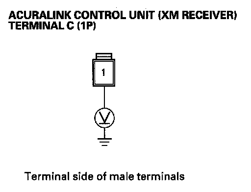
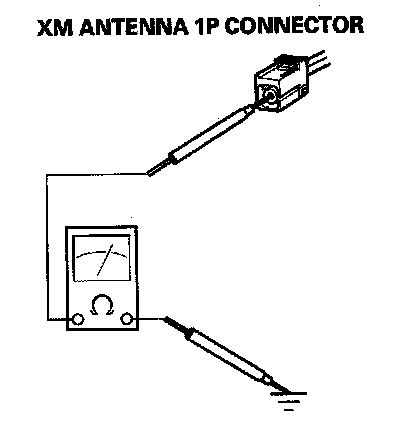
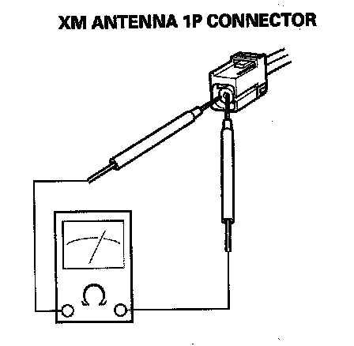
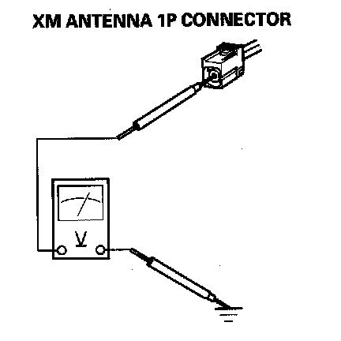

B2240
DTC B2240: XM Antenna Error1. Connect the HDS to the DLC.
2. Clear the DTC with the HDS.
3. Turn the ignition switch OFF, then turn it ON (II) and wait 30 seconds or more.
4. Check for DTC with the HDS.
Is DTC B2240 indicated?
YES - Go to Step 5.
NO - Intermittent failure, XM antenna is OK at this time. Check for poor connections or loose terminals at the AcuraLink control unit (XM receiver) and XM antenna.
5. Check the XM antenna lead connection at the AcuraLink control unit (XM receiver) and at the XM antenna.
Is it connected properly?
YES - Go to Step 6.
NO - Reconnect the connector, and recheck the DTC.
6. Disconnect the AcuraLink control unit (XM receiver) connector C (1P).
7. Turn the ignition switch ON(II).

8. Measure the voltage between the body ground and the AcuraLink control unit (XM receiver) terminal C (1P) No. 1 terminal.
Is there about 4.5 V?
YES - Go to Step 9.
NO - AcuraLink control unit (XM receiver) is faulty, replace the AcuraLink control unit (XM receiver).
9. Turn the ignition switch OFF.
10. Disconnect the XM antenna 1P connector.

11. Check for continuity between body ground and XM antenna 1P connector No. 1 terminal.
Is there continuity?
YES - Replace the antenna lead between the AcuraLink control unit (XM receiver) and XM antenna.
NO - Go to Step 12.

12. Check for continuity between the core and the outside of the feeder antenna at XM antenna 1P connector terminal No. 1.
Is there continuity?
YES - Replace the antenna lead between the AcuraLink control unit (XM receiver) and XM antenna.
NO - Go to Step 13.
13. Reconnect the AcuraLink control unit C (1P) connector.
14. Turn the ignition switch ON(II).

15. Measure the voltage between the body ground and the XM antenna 1P connector No. 1 terminal.
Is there about 4.5 V?
YES - XM antenna is faulty, replace the XM antenna.
NO - Replace the antenna lead between the AcuraLink control unit (XM receiver) and the XM antenna.